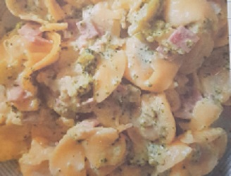

Tortellini mit Brokkoli in Käsesahnesoße
Zubereitungszeit: 50min
Ergibt: 6 Portionen

- 500g Tortellini (Käsefüllung schmeckt sehr gut)
- 600g Sahne (alternativ 300g Sahne + 300ml Milch)
- 1TL Gemüsebrühe, Pfeffer
- 250g Bierschinken
- 250g geriebener gauda
- 1 Brokkoli
- Tortellini in Salzwasser garen, abgießen
- Sahne dazugeben, würzen
- Bierschinken würfeln, untermischen
- Gauda dazugeben, schmelzen lassen
- Brokkoli in kleine Röschen teilen, kurz in Salzwasser kochen (nicht zu weich) und unterheben